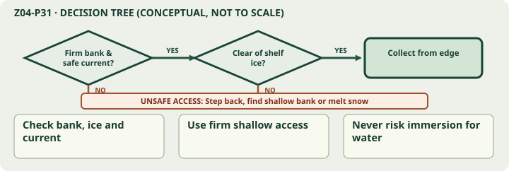

Z04-P31 · Water · New manuscript
Avoid unsafe stream banks, thin ice and steep water access
Prevent slips, cold-water immersion and falls when approaching rivers, lakes, ravines or winter shorelines for water.
When it applies · Collecting raw water along steep embankments, mossy rocks, fast currents, flood-swollen rivers or frozen edges.
Equipment · Dedicated weighted scoop or cord-tied raw container if needed, stable footwear and partner spotter.

Actions
- Inspect bank stability, current speed, slippery algae-covered rock and ice shelves before stepping toward the water's edge.[E12, T07, ED]
- Choose a gently sloping, firm gravel or rock access point out of fast current; keep one partner back on solid ground when collection footing is awkward.[E12, T01, ED]
- Stay completely off overhanging snow cornices, shelf ice and undercut mud banks that can collapse into deep or cold water.[E12, T07]
Failure recognition · Leaning over a fast flooded bank or stepping onto a snowy shoreline shelf to reach open water, causing an immersion emergency.[E12, T07]
Verify · Confirm solid dry footing and an easy step-back path before dipping the raw vessel.[T01, ED]
Stop or change course · If the only reachable water requires risking a fall, fast current or uncertain ice, abandon that access point and melt snow or move to a safer site.[E12, T07, ED]
Evidence and editorial notes
- E12 · Minnesota DNR · Ice Safety (current web edition)
- Section: Ice Safety > basic precautions · Conditions: Minnesota ice edges and travel routes
Support: No ice is universally safe. Strength can differ over short distances; appearance or tracks alone cannot establish a safe crossing.
Limitations: Currents, springs, snow insulation, and freeze-thaw cycles weaken ice invisibly. · Conflicting evidence: None; mandates shore-bound detour for foundational walking parties.
Editorial note: Maintains strict separation from specialized B013 ice chapters. · Specialist reviewer: Ice safety and search and rescue
Primary source · checked 2026-11-24 - T01 · American Red Cross · First Aid Steps (current web edition)
- Section: First Aid Steps > Check the scene; check the person · Conditions: Lay responder in United States; assess safety before contact
Support: Check scene safety, responsiveness, breathing and immediately life-threatening conditions.
Limitations: Lay guidance does not replace advanced clinical or rescue protocols. · Conflicting evidence: None; universal first-response opening gate.
Editorial note: Anchors scene-safety-first rule across Z01. · Specialist reviewer: EMS and wilderness medicine
Primary source · checked 2026-11-24 - T07 · FEMA · Flood Hazard Information Sheet (agency PDF)
- Section: How to stay safe when a flood threatens; take an active role · Conditions: U.S. household flood preparedness and evacuation
Support: Prepare contacts, medication and supplies. Heed evacuation instructions and avoid flooded roads.
Limitations: Six inches of moving water can knock down an adult; shallow-looking crossings hide road washouts. · Conflicting evidence: None; aligns with NWS-FLOOD.
Editorial note: Supports flood turnaround and evacuation decision thresholds. · Specialist reviewer: Emergency management
Primary source · checked 2026-11-24
Source lineage · MN DNR ice safety and NWS flood guidance; new manuscript · Classification · New manuscript.